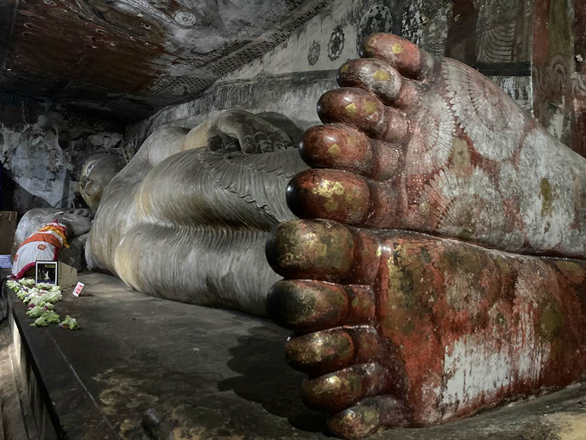

五個小時後，我們駕駛著那輛紅色的小Tuktuk車，抵達了斯里蘭卡八大世界文化遺產之一的丹布勒石窟寺。這座石窟寺位於山頂，需要從山腳攀爬20分鐘的樓梯才能到達。途中買門票的地方在半山腰，2,000盧比一張票，約200新台幣。爬樓梯的過程中，四周風景優美，遠遠望去，可以看見兩座巨石矗立在平地上——獅子岩和皮杜蘭加拉岩。在雲朵的映襯下，宛如宮崎駿筆下的天空之城，充滿了奇幻的色彩。
| （圖1：遠方的獅子岩和皮杜蘭加拉岩） | |
我們一路走到山頂，首先映入眼簾的是石窟寺的全白圍牆，隨後是莊嚴的大門，石窟寺嵌在黑褐色的岩石中，散發著一種讓人心靈平靜的莊嚴氛圍。進入寺廟前，我們脫下鞋子，將它們放在置鞋區，隨意投些保管費，然後走進這片聖地。
| （圖2：丹布勒石窟寺） | |
傍晚時分，岩石地面仍保留著中午的餘溫，我們赤腳踏進白如珍珠的大門，迎面是一塊黑棕色的巨岩，中間夾著一整排英式混合斯里蘭卡風格的白色門廊。此時，門口的風輕輕拂過，身上的熱氣隨之消散，頓時感到涼爽了許多。
門後坐著幾位斯里蘭卡的大叔，他們滿臉笑容，詢問我們是否想了解丹布勒石窟寺的故事。他們的笑容如此溫暖，讓人無法拒絕。於是，我們隨著他們，一步步揭開這座千年遺跡的神秘面紗。據統計，丹布勒石窟共有80多個洞穴，但開放給遊客參觀的僅有5個。它們分別是最古老的「眾神之王精舍」、面積最大的「偉大君王精舍」、「大新精舍」、關於愛情的「西精舍」和「新第二精舍」。
|  | |
| （圖3： 眾神之王精舍的15米千年臥佛） | |
我們首先探訪的是「眾神之王精舍」。門口有表演者敲著斯里蘭卡的鼓，鼓聲清脆響亮，他背後香爐中的煙霧裊裊升起，讓人進入洞穴前增添了不少儀式感。眾神之王精舍的入口處雕刻著斯里蘭卡的圖騰——大象、獅子、天鵝和蓮花，象徵著人生的各個階段。走進洞內，悶熱的空氣中混合著線香的味道。幽暗的洞穴中，長達15公尺的臥佛靜臥其中，已在此守護千年。佛陀的腳邊站著弟子阿難，頭頂上方則是印度教主神毗濕奴。兩大宗教的神祇共存於一個洞穴，是斯里蘭卡佛教與印度教之間的歷史糾葛。
| （圖4： 建造丹布勒石窟寺的Valagamba國王） | |
五個洞穴中，最大的是第二個洞穴——偉大君主精舍。洞穴長52米，寬23米，高7米，壯麗的洞穴內有16尊站立佛像、42尊坐佛、兩尊印度神像和兩尊國王造像。
| （圖5： 偉大君主精舍中的坐佛） | |
金光閃閃的佛像在黃色燈光的照耀下，整個洞穴如同被佛光普照。這裡還保存著南亞最大的壁畫，面積達2,100平方公尺，其中最引人注目的是惡魔Mara阻擋佛陀成道的畫面。畫中佛陀端坐中央，周圍是各種惡魔的干擾，整幅壁畫以紅色為基底，象徵著戰鬥的激烈。
 |
|
| （圖6： 惡魔Mara阻擋佛陀成道的壁畫） | |
洞穴內還有一口水缸，水缸中的水來自石窟頂端岩石縫隙中滴落的岩水，信徒們相信這是上天賜予的神水。微笑的大叔為我們講述了石窟寺的建造歷史，從西元前1世紀講起，當時Valagamba國王被南印度泰米爾大軍打敗後逃至丹布勒石窟避難，15年養精蓄銳並在收復領地後建造了石窟寺以示感謝。
| （圖7：石窟寺的大門） | |
五個洞穴各具特色，短暫的導覽結束後，大叔微笑著向我們索取捐贈費用，我們遞上2,000盧比以表感謝。夜幕降臨，寺廟區內一片寂靜，我們靜靜地欣賞這片神聖之地。寺廟外巨大的菩提樹在風中搖曳，彷彿在對我們說再見。我們帶著對石窟寺的美好回憶悄然離去，結束了丹布勒石窟的參觀。